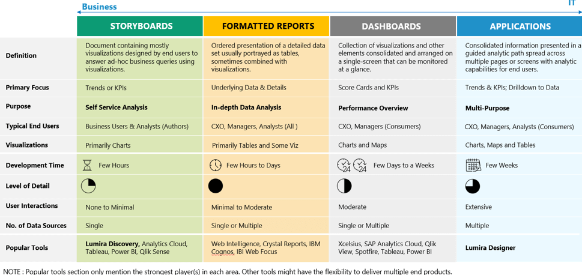

Tipos de Business Intelligence
Definiciones
Business Intelligence es una palabra genérica que incluye todas las herramientas y procedimientos destinados al análisis de datos y el acceso a la información (desde la extracción hasta la presentación)
Al ser un concepto tan amplio, abarca muchas herramientas y tipos de soluciones, por lo que conviene distinguir los "tipos" de Business Intelligence, para saber de qué estamos hablando y para valorar lo que necesita nuestra compañía.
No es la primera vez que me enfrento a este reto. Lo hice en el segundo artículo de este blog, y en aquella ocasión distinguí las siguientes categorías:
- Reporting
- Análisis OLAP
- EIS
- DSS
- Data mining
- KMS
En el citado artículo veréis las definiciones que di en aquella ocasión.
Hace más de 10 años de esa clasificación, y hoy suena antigua y desfasada. También se detecta el abuso de buzzwords que van y vienen. ¿Aún son populares los términos EIS y DSS? ¿Alguna vez se popularizó el término KMS? 🙄
No es la única vez que que traté de clasificar las soluciones Business Intelligence. En el artículo "Trabajadores de la información" identifiqué cuatro categorías:
- Cuadros de mando
- Análisis OLAP
- Reporting
- Data mining
También hoy esta clasificación parece pobre y se deja cosas relevantes en el camino.
Tampoco fue esa la última vez que categoricé las soluciones BI. Lo hice de nuevo en "Las ecuaciones fundamentales del Business Intelligence" y lo reduje a tres categorías principales:
- Reporting
- Análisis OLAP
- Cuadros de mando
En todas esas clasificaciones echo en falta las herramientas ETL, que también forman parte del universo BI, por supuesto.
Han pasado 10 años de esas clasificaciones y no parece sencillo incluir las herramientas actuales de BI en estas categorías. ¿Son Crono, PowerBI, Tableau, Lumira o QlikView herramientas de "Cuadros de mando"? ¿Donde entra el Big Data, el Data Science o la IA?
O hemos de cambiar los "tipos" de BI o hemos de cambiar las definiciones de estos términos. Sin extenderme, hoy clasificaría el universo del Business Intelligence de este modo:
- ETL
- Reporting
- Análisis multidimensional
- Dashboards
- Data science
¿Encontráis a faltar alguna categoría/solución? ¿Qué tipos de Business Intelligence existen según vuestro criterio? Utilizad los comentarios para dejar vuestra opinión.
En fin, que lo que hoy quería mostraros es una clasificación muy interesante que he encontrado en un blog de SAP. El artículo se llama "Future of SAP BusinessObjects and SAP Lumira?" y distingue 4 tipos de soluciones o casos de uso:
- Storyboards
- Formatted reports
- Dashboards
- Applications
El cuadro es muy instructivo, pues muestra el propósito de cada categoría, el tipo de usuario, el tipo de visualizaciones que usa, el tiempo de desarrollo... Súper interesante, ya que esas son las cosas que hemos de valorar para escoger una solución BI para nuestra organización.
Por criticar algo, diré que encuentro a faltar el análisis multidimensional (OLAP) de toda la vida. Es cierto que este tipo de análisis (las tablas dinámicas de siempre con algún tipo de capa semántica) lo considerarán cubierto por los "Storyboards" o por el "Reporting". En mi opinión el análisis OLAP es un caso de uso diferenciado de todos los demás, y especialmente importante si necesitas ofrecer capacidades de análisis libre a tus usuarios. Se merece, claramente, una categoría propia.